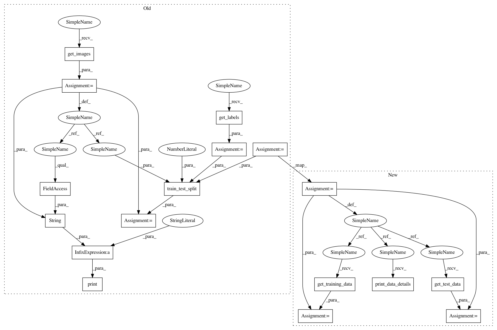

7b6fd231d17cd1fd88c1fc163a33f1049d63e7b0,examples/timedelay_conv_model.py,,,#,2
Before Change
data_loader = DataLoader(from_csv=False, datapath=directory_path, time_delay=3)
dataset = data_loader.get_data()
labels = dataset.get_labels()
images = dataset.get_images()
if verbose:
print("raw image data shape: " + str(images.shape))
label_count = len(labels[0])
print("Creating training/testing data...")
validation_split = 0.25
X_train, X_test, y_train, y_test = train_test_split(images, labels,
test_size=validation_split, random_state=42, stratify=labels)
train_gen = DataGenerator(time_delay=dataset.get_time_delay()).fit(X_train, y_train)
test_gen = DataGenerator(time_delay=dataset.get_time_delay()).fit(X_test, y_test)
print("Training net...")
After Change
from src.dataloader import DataLoader
from src.neuralnets import TimeDelayConvNN
validation_split = 0.25
target_dimensions = (64, 64)
channels = 1
verbose = True
print("--------------- Time-Delay Convolutional Model -------------------")
print("Loading data...")
directory_path = "image_data/sample_image_series_directory"
data_loader = DataLoader(from_csv=False, datapath=directory_path, validation_split=validation_split, time_delay=3)
dataset = data_loader.load_data()
if verbose:
dataset.print_data_details()
print("Preparing training/testing data...")
train_images, train_labels = dataset.get_training_data()
train_gen = DataGenerator(time_delay=dataset.get_time_delay()).fit(train_images, train_labels)
test_images, test_labels = dataset.get_test_data()
test_gen = DataGenerator(time_delay=dataset.get_time_delay()).fit(test_images, test_labels)
print("Training net...")
model = TimeDelayConvNN(target_dimensions, channels, emotion_map=dataset.get_emotion_index_map(), time_delay=dataset.get_time_delay())
In pattern: SUPERPATTERN
Frequency: 4
Non-data size: 17
Instances
Project Name: thoughtworksarts/EmoPy
Commit Name: 7b6fd231d17cd1fd88c1fc163a33f1049d63e7b0
Time: 2018-04-26
Author: angelica.perez37@gmail.com
File Name: examples/timedelay_conv_model.py
Class Name:
Method Name:
Project Name: thoughtworksarts/EmoPy
Commit Name: 7b6fd231d17cd1fd88c1fc163a33f1049d63e7b0
Time: 2018-04-26
Author: angelica.perez37@gmail.com
File Name: examples/convolutional_lstm_model.py
Class Name:
Method Name:
Project Name: thoughtworksarts/EmoPy
Commit Name: 7b6fd231d17cd1fd88c1fc163a33f1049d63e7b0
Time: 2018-04-26
Author: angelica.perez37@gmail.com
File Name: examples/transferlearning_model.py
Class Name:
Method Name:
Project Name: thoughtworksarts/EmoPy
Commit Name: 7b6fd231d17cd1fd88c1fc163a33f1049d63e7b0
Time: 2018-04-26
Author: angelica.perez37@gmail.com
File Name: examples/convolutional_model.py
Class Name:
Method Name: